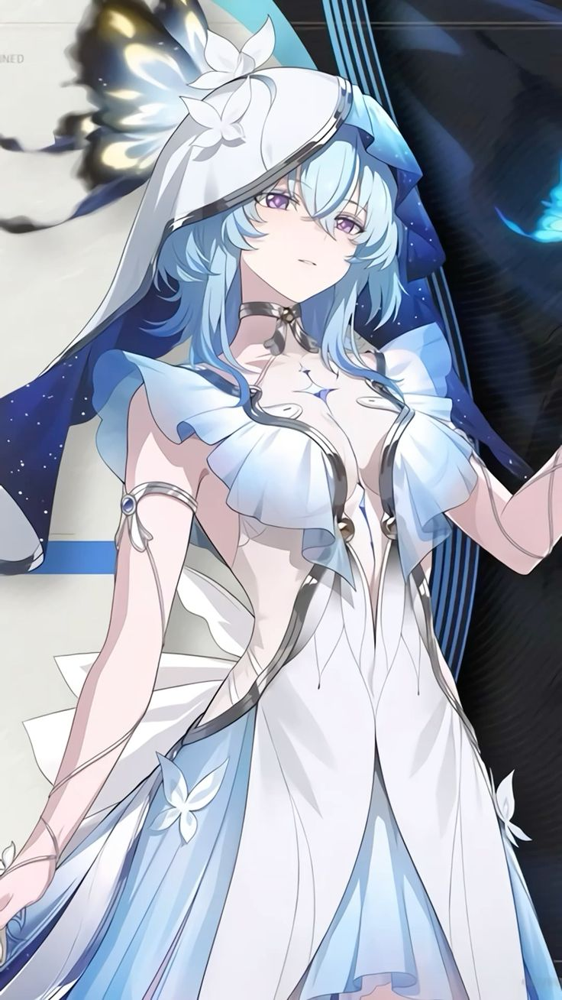

Shorekeeper

Basic Information
- Resonator: 5 stars
- Attribute: Spectro
- Weapon: Recifer
- Role: Support/Healer
About Her
The Shorekeeper of the Black Shores, a mysterious divine being governing the essence of aloofness, emerges in respond to your summon. Having spent eons in guardianship, the first stirrings of emotion and desire awaken within her heart, fostering a firm determination to connect with the world - and with you.